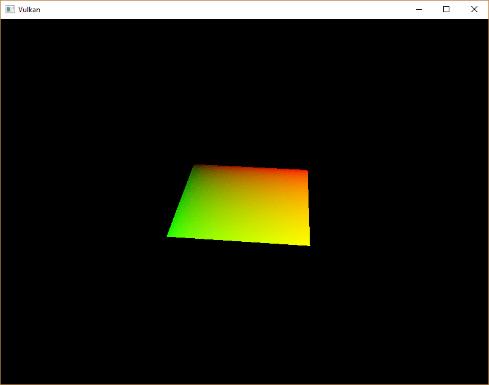
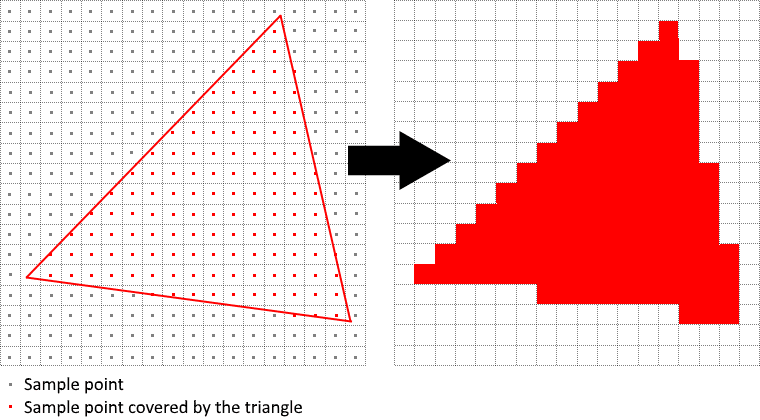
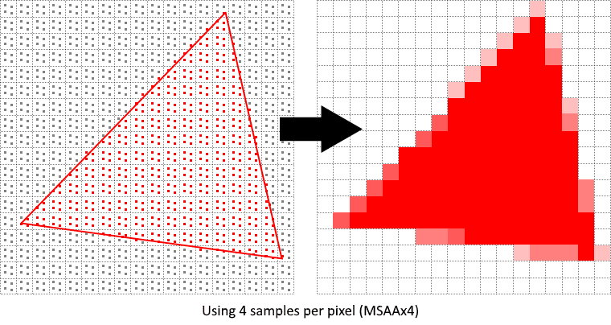
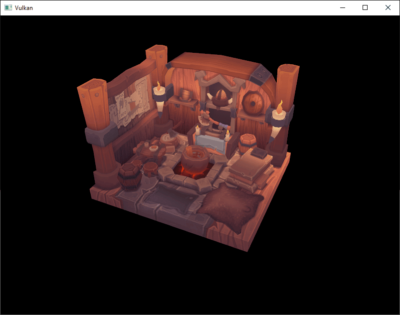
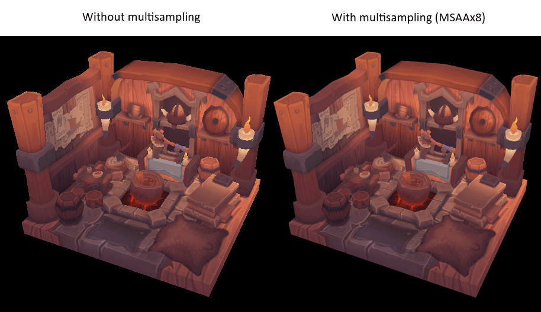
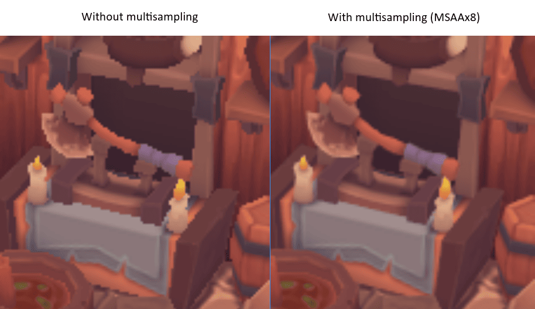
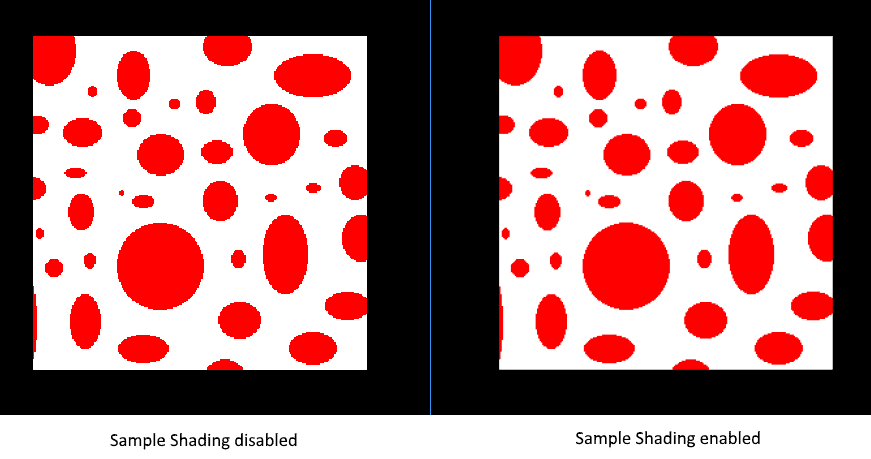

Multisampling
Introduction
Our program can now load multiple levels of detail for textures which fix artifacts when rendering objects far away from the viewer. The image is now a lot smoother, however; on closer inspection, you will notice jagged saw-like patterns along the edges of drawn geometric shapes. This is especially visible in one of our early programs when we rendered a quad:

This undesired effect is called "aliasing," and it’s a result of a limited number of pixels that are available for rendering. Since there are no displays out there with unlimited resolution, it will always be visible to some extent. There are a number of ways to fix this, and in this chapter we’ll focus on one of the more popular ones: Multisample antialiasing (MSAA).
In ordinary rendering, the pixel color is determined based on a single sample point which in most cases is the center of the target pixel on screen. If part of the drawn line passes through a certain pixel but doesn’t cover the sample point, that pixel will be left blank, leading to the jagged "staircase" effect.

What MSAA does is it uses multiple sample points per pixel (hence the name) to determine its final color. As one might expect, more samples lead to better results, however, it is also more computationally expensive.

In our implementation, we will focus on using the maximum available sample count. Depending on your application, this may not always be the best approach, and it might be better to use fewer samples for the sake of higher performance if the final result meets your quality demands.
Getting available sample count
Let’s start off by determining how many samples our hardware can use. Most modern GPUs support at least eight samples, but this number is not guaranteed to be the same everywhere. We’ll keep track of it by adding a new class member:
...
vk::SampleCountFlagBits msaaSamples = vk::SampleCountFlagBits::e1;
...By default, we’ll be using only one sample per pixel which is equivalent to no multisampling, in which case the final image will remain unchanged.
The exact maximum number of samples can be extracted from VkPhysicalDeviceProperties associated with our selected physical device.
We’re using a depth buffer, so we have to take into account the sample count for both color and depth.
The highest sample count that both support (and) will be the maximum we can support.
Add a function that will fetch this information for us:
vk::SampleCountFlagBits getMaxUsableSampleCount() {
vk::PhysicalDeviceProperties physicalDeviceProperties = physicalDevice->getProperties();
vk::SampleCountFlags counts = physicalDeviceProperties.limits.framebufferColorSampleCounts & physicalDeviceProperties.limits.framebufferDepthSampleCounts;
if (counts & vk::SampleCountFlagBits::e64) { return vk::SampleCountFlagBits::e64; }
if (counts & vk::SampleCountFlagBits::e32) { return vk::SampleCountFlagBits::e32; }
if (counts & vk::SampleCountFlagBits::e16) { return vk::SampleCountFlagBits::e16; }
if (counts & vk::SampleCountFlagBits::e8) { return vk::SampleCountFlagBits::e8; }
if (counts & vk::SampleCountFlagBits::e4) { return vk::SampleCountFlagBits::e4; }
if (counts & vk::SampleCountFlagBits::e2) { return vk::SampleCountFlagBits::e2; }
return vk::SampleCountFlagBits::e1;
}We will now use this function to set the msaaSamples variable during the physical device selection process.
For this, we have to slightly modify the pickPhysicalDevice function:
void pickPhysicalDevice() {
...
for (const auto& device : devices) {
if (isDeviceSuitable(device)) {
physicalDevice = device;
msaaSamples = getMaxUsableSampleCount();
break;
}
}
...
}Setting up a render target
In MSAA, each pixel is sampled in an offscreen buffer which is then rendered to the screen. This new buffer is slightly different from regular images we’ve been rendering to - they have to be able to store more than one sample per pixel. Once a multi-sampled buffer is created, it has to be resolved to the default framebuffer (which stores only a single sample per pixel). This is why we have to create an additional render target and modify our current drawing process. We only need one render target since only one drawing operation is active at a time, just like with the depth buffer. Add the following class members:
...
vk::raii::Image colorImage = nullptr;
vk::raii::DeviceMemory colorImageMemory = nullptr;
vk::raii::ImageView colorImageView = nullptr;
...This new image will have to store the desired number of samples per pixel, so we need to pass this number to VkImageCreateInfo during the image creation process.
Modify the createImage function by adding a numSamples parameter:
void createImage(uint32_t width, uint32_t height, uint32_t mipLevels, vk::SampleCountFlagBits numSamples, vk::Format format, vk::ImageTiling tiling, vk::ImageUsageFlags usage, vk::MemoryPropertyFlags properties, vk::raii::Image& image, vk::raii::DeviceMemory& imageMemory) const {
...
imageInfo.samples = numSamples;
...For now, update all calls to this function using VK_SAMPLE_COUNT_1_BIT - we will be replacing this with proper values as we progress with implementation:
createImage(swapChainExtent.width, swapChainExtent.height, 1, vk::SampleCountFlagBits::e1, depthFormat, vk::ImageTiling::eOptimal, vk::ImageUsageFlagBits::eDepthStencilAttachment, vk::MemoryPropertyFlagBits::eDeviceLocal, depthImage, depthImageMemory);
...
createImage(texWidth, texHeight, mipLevels, vk::SampleCountFlagBits::e1, vk::Format::eR8G8B8A8Srgb, vk::ImageTiling::eOptimal, vk::ImageUsageFlagBits::eTransferSrc | vk::ImageUsageFlagBits::eTransferDst | vk::ImageUsageFlagBits::eSampled, vk::MemoryPropertyFlagBits::eDeviceLocal, textureImage, textureImageMemory);We will now create a multi-sampled color buffer.
Add a createColorResources function and note that we’re using msaaSamples here as a function parameter to createImage.
We’re also using only one mip level, since this is enforced by the Vulkan specification in case of images with more than one sample per pixel.
Also, this color buffer doesn’t need mipmaps since it’s not going to be used as a texture:
void createColorResources() {
vk::Format colorFormat = swapChainImageFormat;
createImage(swapChainExtent.width, swapChainExtent.height, 1, msaaSamples, colorFormat, vk::ImageTiling::eOptimal, vk::ImageUsageFlagBits::eTransientAttachment | vk::ImageUsageFlagBits::eColorAttachment, vk::MemoryPropertyFlagBits::eDeviceLocal, colorImage, colorImageMemory);
colorImageView = createImageView(colorImage, colorFormat, vk::ImageAspectFlagBits::eColor, 1);
}For consistency, call the function right before createDepthResources:
void initVulkan() {
...
createColorResources();
createDepthResources();
...
}Now that we have a multi-sampled color buffer in place, it’s time to take care of depth.
Modify createDepthResources and update the number of samples used by the depth buffer:
void createDepthResources() {
...
createImage(swapChainExtent.width, swapChainExtent.height, 1, msaaSamples, depthFormat, vk::ImageTiling::eOptimal, vk::ImageUsageFlagBits::eDepthStencilAttachment, vk::MemoryPropertyFlagBits::eDeviceLocal, depthImage_, depthImageMemory_);
...
}And update the recreateSwapChain so that the new color image can be recreated in the correct resolution when the window is resized:
void recreateSwapChain() {
...
createImageViews();
createColorResources();
createDepthResources();
...
}We made it past the initial MSAA setup, now we need to start using this new resource in our graphics pipeline, framebuffer, render pass and see the results!
Adding new attachments
Let’s take care of the render pass first.
Modify createRenderPass and update color and depth attachment creation info structs:
void createRenderPass() {
...
colorAttachment.samples = msaaSamples;
colorAttachment.finalLayout = vk::ImageLayout::eColorAttachmentOptimal;
...
depthAttachment.samples = msaaSamples;
...You’ll notice that we have changed the finalLayout from VK_IMAGE_LAYOUT_PRESENT_SRC_KHR to VK_IMAGE_LAYOUT_COLOR_ATTACHMENT_OPTIMAL.
That’s because multi-sampled images cannot be presented directly.
We first need to resolve them to a regular image.
This requirement does not apply to the depth buffer, since it won’t be presented at any point.
Therefore, we will have to add only one new attachment for color, which is a so-called resolve attachment:
...
vk::AttachmentDescription colorAttachmentResolve({}, swapChainImageFormat, vk::SampleCountFlagBits::e1, vk::AttachmentLoadOp::eDontCare,
vk::AttachmentStoreOp::eStore, vk::AttachmentLoadOp::eDontCare, vk::AttachmentStoreOp::eDontCare, vk::ImageLayout::eUndefined,
vk::ImageLayout::ePresentSrcKHR);
...The render pass now has to be instructed to resolve multi-sampled color image into regular attachment. Create a new attachment reference that will point to the color buffer which will serve as the resolve target:
...
vk::AttachmentReference colorAttachmentResolveRef(2, vk::ImageLayout::eColorAttachmentOptimal);
...Set the pResolveAttachments subpass struct member to point to the newly created attachment reference.
This is enough to let the render pass define a multisample resolve operation which will let us render the image to screen:
...
subpass.pResolveAttachments = &colorAttachmentResolveRef;
...
Since we’re reusing the multi-sampled color image, it’s necessary to update
the srcAccessMask of the VkSubpassDependency.
This update ensures that any write operations to the color attachment are completed before later ones begin, thus preventing write-after-write hazards that can lead to unstable rendering results:
...
dependency.srcAccessMask = vk::AccessFlagBits::eColorAttachmentWrite | vk::AccessFlagBits::eDepthStencilAttachmentWrite;
...Now update render pass info struct with the new color attachment:
...
std::array attachments = {colorAttachment, depthAttachment, colorAttachmentResolve};
...With the render pass in place, modify createFramebuffers and add the new image view to the list:
void createFramebuffers() {
...
vk::ImageView attachments[] = { *colorImageView, *depthImageView, view };
...
}Finally, tell the newly created pipeline to use more than one sample by modifying createGraphicsPipeline:
void createGraphicsPipeline() {
...
multisampling.rasterizationSamples = msaaSamples;
...
}Now run your program, and you should see the following:

Just like with mipmapping, the difference may not be apparent straight away. On a closer look, you’ll notice that the edges are not as jagged anymore and the whole image seems a bit smoother compared to the original.

The difference is more noticeable when looking up close at one of the edges:

Quality improvements
There are certain limitations of our current MSAA implementation that may impact the quality of the output image in more detailed scenes. For example, we’re currently not solving potential problems caused by shader aliasing, i.e. MSAA only smoothens out the edges of geometry but not the interior filling. This may lead to a situation when you get a smooth polygon rendered on screen, but the applied texture will still look aliased if it contains high contrasting colors. One way to approach this problem is to enable Sample Shading which will improve the image quality even further, though at an additional performance cost:
void createLogicalDevice() {
...
deviceFeatures.sampleRateShading = vk::True; // enable sample shading
feature for the device
...
}
void createGraphicsPipeline() {
...
multisampling.sampleShadingEnable = vk::True; // enable sample shading in the pipeline
multisampling.minSampleShading = .2f; // min fraction for sample shading; closer to one is smoother
...
}In this example, we’ll leave sample shading disabled, but in certain scenarios the quality improvement may be noticeable:

Conclusion
It has taken a lot of work to get to this point, but now you finally have a good base for a Vulkan program. The knowledge of the basic principles of Vulkan that you now possess should be sufficient to start exploring more of the features, like:
-
Push constants
-
Instanced rendering
-
Dynamic uniforms
-
Separate images and sampler descriptors
-
Pipeline cache
-
Multithreaded command buffer generation
-
Multiple subpasses
The current program can be extended in many ways, like adding Blinn-Phong lighting, post-processing effects, and shadow mapping. You should be able to learn how these effects work from tutorials for other APIs, because despite Vulkan’s explicitness, many concepts still work the same.